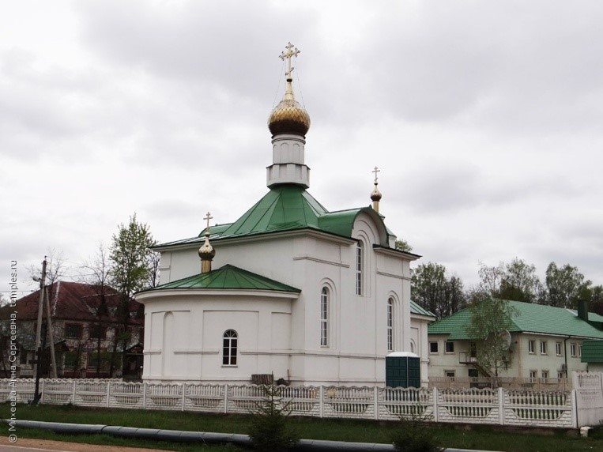
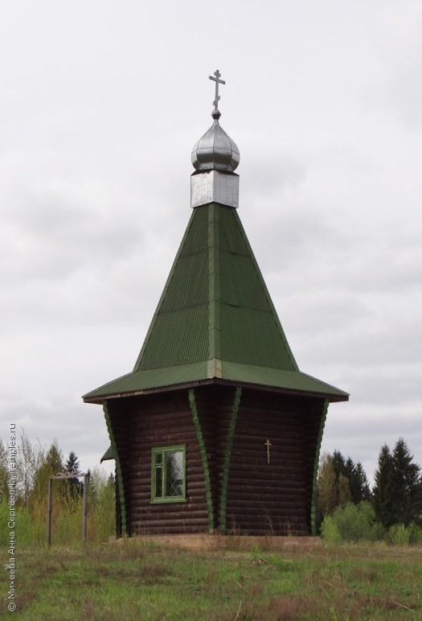
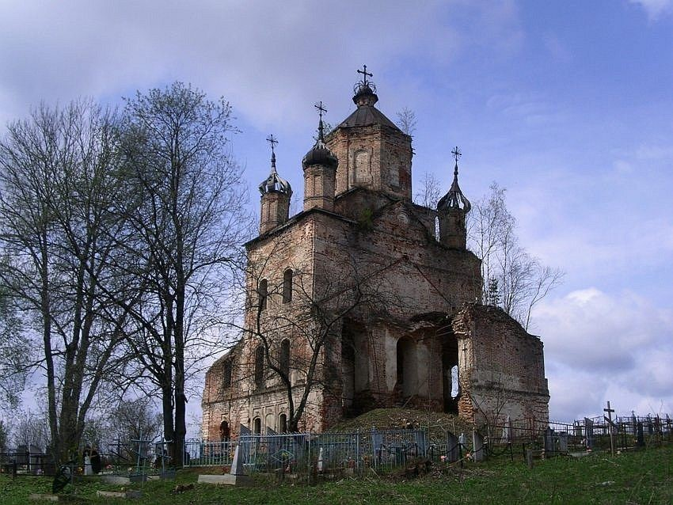
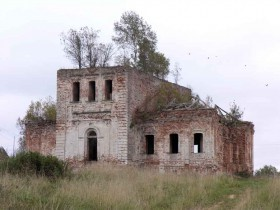
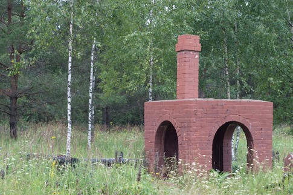
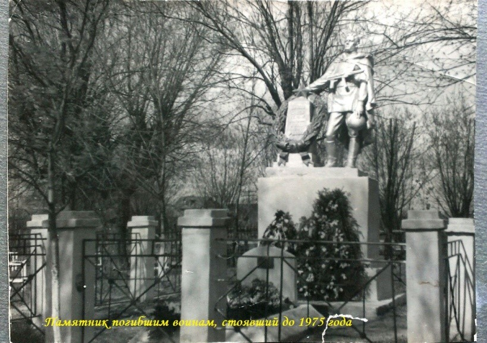
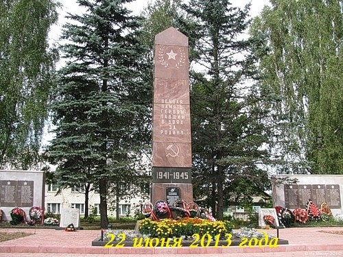

Западная Двина
Культура
Никольская церковь

Новопостроенная(2004-2008 г.г.) однопрестольная церковь в эклектичном стиле. Одноглавый двухсветный четверик под низким шатровым сводом.
Часовня Георгия Победоносца

Деревянная часовня, построенная в 2000г. на городском кладбище Представляет собой кубический сруб с повалами, под высокой четырёхскатной кровлей и крытым крыльцом на западной стороне.
Погост Качевицы, церковь Спаса Нерукотворного, 2-я пол. XVIII в.
Восьмерик на четверике, овальные окошечки с козыречками в куполе, люкарнами называются, купол круглый.
Берег озера Песно, Преображенская церковь

Громадная пятиглавая церковь 1745 года постройки.
Деревня Пятиусово. Церковь Троицы Живоначальной

Год постройки: 1766.
Деревня Селяне. Памятник жертвам фашизма - жителям сел и деревень, сожженных и расстрелянных карателями во время оккупации района

7 мая 1995 года в деревне Селяне был установлен памятник жертвам фашизма - жителям сел и деревень, сожженных и расстрелянных карателями во время оккупации района. 5 долгих месяцев хозяйничали фашисты на территории района. 1137 семей остались без крова, погибли от рук фашистов 518 жителей района, среди них более 300 женщин и детей. Немецко-фашиские изверги за короткое время сожгли 42 населенных пункта.
Западная Двина. Памятник воинам, погибшим в боях с фашистскими захватчиками

7 декабря 1954 года на привокзальной площади открыт памятник воинам, погибшим в боях с фашистскими захватчиками. На высоком бетонном постаменте предстает фигура воина в плащ-палатке, с автоматом и медалью Героя Советского Союза на груди. К 30-летию победы на этом месте отрывается мемориал погибшим воинам, который представляет собой высокую стелу и по боком каменные стены с мраморными плитами, на которых выбиты имена погибших героев.
